ABOUT
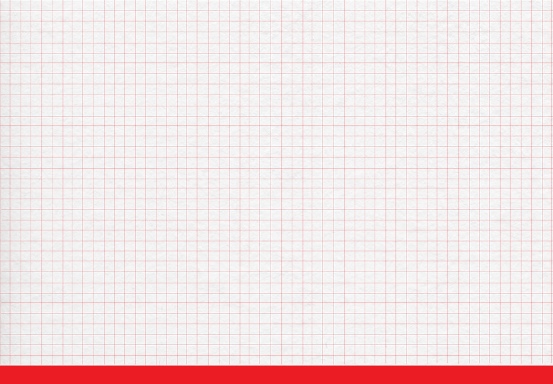


 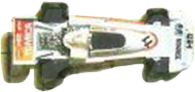
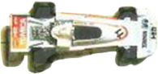
SIZE
AGE RANGE
DETAIL
LINE UP
PRIDE
1970
GLOBAL
ADITION
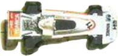
SIZE
AGE RANGE
DETAIL
LINE UP
PRIDE
1970
GLOBAL
ADITION
토미카의 시작
"일본 아이들에게 일본 자동차를!"
토미카가 탄생한 건 1970년이었습니다. "일본 아이들에게 일본 자동차를!"이라는 캐치프레이즈로
시작된 이 프로젝트는 당시 해외 브랜드들이 장악하고 있던
미니카 시장에 도전장을 내밀었죠.
토미의 창업자가 직접 발로 뛰며 닛산, 토요타, 혼다를 찾아가 계약을 성사시켰고,
그렇게 일본 브랜드 미니카의 시대가 열렸습니다.
First Line up


slide!
첫 라인업은 총 6종이었습니다.
닛산 실비아
토요타 크라운 슈퍼 디럭스
닛산 페어레이디 Z432
닛산 블루버드 1600SSS
이스즈 벨렛 1600GT
토요타 코로나 마크II
출시 첫 해에만 380만대가 팔리며
일본 미니카 시장에 대혁명을 일으켰습니다.
1/64 스케일
“실차 그대로 64배 축소한 정밀도”
토미카의 정밀도는 광기 수준입니다.
"실제 차량을 그대로 64배 축소한다"는 철학 아래 제작되는 이 미니카들은
세 단계의 긴 과정을 거칩니다.
1단계 - 실차 측정 (2~3개월)

2단계 — 설계 (3~4개월)

3단계 — 금형 제작 (4~6개월)

보이지 않는 곳까지 완벽하게
외관 디테일
실차 컬러 매칭 & 3~4겹 도색
차체 라인과 형태
실제 폰트 번호판
하부구조
0.5mm 테일램프
내부 디테일(프리미엄 라인)
대시보드, 스티어링 휠, 시트 텍스처, 기어 레버, 엔진룸까지 재현됩니다.

토미카의 상징이라고 할 수 있는 건 바로 서스펜션입니다.
바퀴가 독립적으로 움직이고 울퉁불퉁한 표면에서도 4바퀴가 모두 접지되는 구조로 설계되어 있습니다. 게다가 도어, 본넷, 트렁크가 개폐되고, 일부 모델은 루프 탈착까지 가능합니다.
50년 라인업의 역사
토미카는 50년 동안 누적 1,200종 이상을 출시하며 상징적인 미니카 브랜드로 자리잡았습니다.
국산차 라인
스바루, 닛산, 토요타, 혼다...


외제차 라인
페라리, 람보르기니, 포르쉐, 벤츠…
이외에도 특수 차량으로는 경찰차, 소방차, 버스, 중장비, 택배 트럭까지 다양하고, 레이싱 팀, 영화,
기업 트럭과의 콜라보 작품도 있습니다. 한정판과 단종 모델의 경우, 프리미엄 초판 미개봉 제품은 정가의 5~20배까지 가격이 상승하기도 합니다.
메이드 인 재팬의 자부심
토미카의 생산은 여러 국가에서 이루어지지만, 핵심 공정인 금형, 디자인, 품질관리는
100% 일본에서 진행됩니다.
품질 기준은 정말 엄격합니다. 도색 불량률은 0.1% 이하, 조립 불량은 0.05% 이하로 관리되고,
바퀴 회전 테스트는 1만회, 낙하 테스트는 1m 높이에서 100회,
자외선 내구성 테스트는 500시간 동안 진행됩니다.
토미카의 철학은 명확합니다.
"싸게 만들 수 있다. 하지만 우리는 만들지 않는다."
어른들이 더 산다?
토미카 컬렉터의 연령층을 보면 성인이 90%를 차지합니다.
어른들이 토미카를 모으는 이유는
향수
어린 시절 기억, 아버지의 차, 첫차
실차 대리 만족
5억짜리 페라리 → 5천원
진입 비용 저렴
4천원~4만원
공간 절약
100대도 신발장 한 칸
디오라마 제작 인기
투자 가치
단종 모델은 10~30배까지 상승
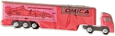 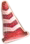 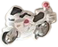 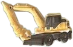 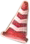 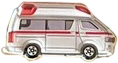
글로벌 시장의 토미카
토미카는 국가별로 인기 모델이 다릅니다.
일본에서는 국산차, 경차, 특수차량이 인기고,
한국에서는 슈퍼카, 현대·기아 차량, 애니메이션 콜라보 제품이 잘 팔립니다.
미국에서는 머스탱, 쉐보레, 픽업트럭이,
유럽에서는 BMW, 벤츠, 클래식카, 프리미엄 라인이 사랑받고 있습니다.
판매 규모도 어마어마합니다. 전세계적으로 연간 4천만대가 팔리는데,
"매초 1.3대씩 팔리는 미니카"라는 별명이 붙을 정도죠.
2020년에는 누적 판매량 10억대를 돌파했습니다.
컬렉터들이 사랑하는 특별판
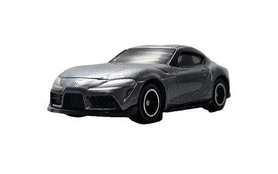초회 한정 컬러
첫 생산분만 색 다름 → 가치 3~5배
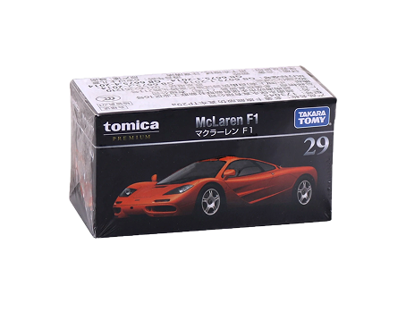블랙박스 시리즈
1988~2000년 고급 라인
현재 프리미엄 최고가
이벤트 한정판
모터쇼, 박물관, 기념 행사판
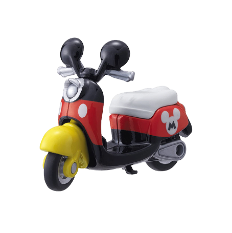디즈니 에디션
미키 컬러·캐릭터 데칼
프리미엄 언리미티드
정밀도 강화, 메탈 파츠 증가, 실감 표현 극대화